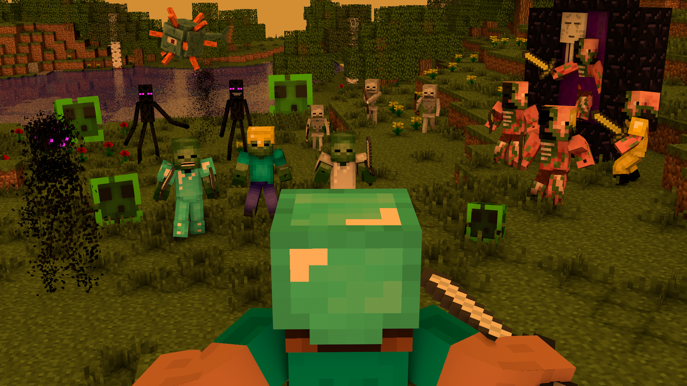
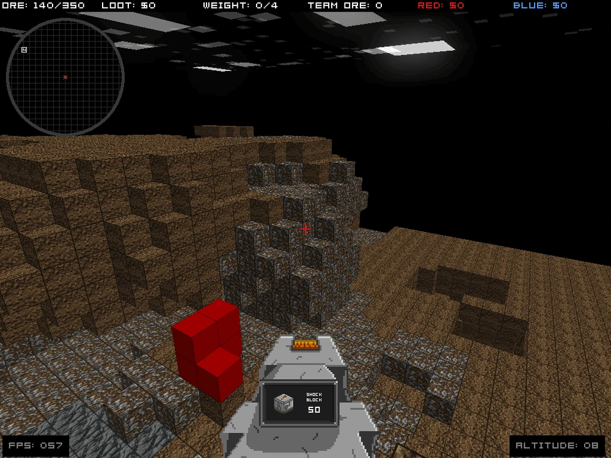
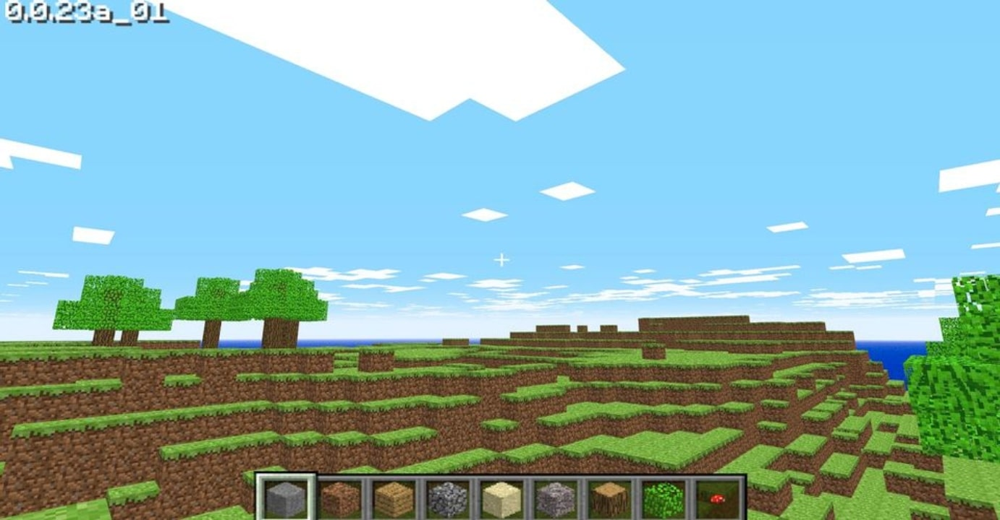
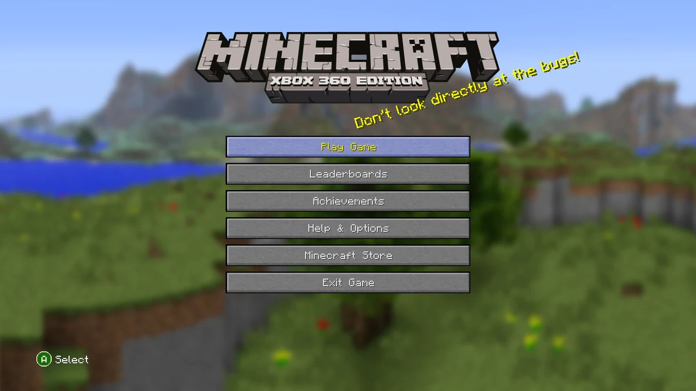
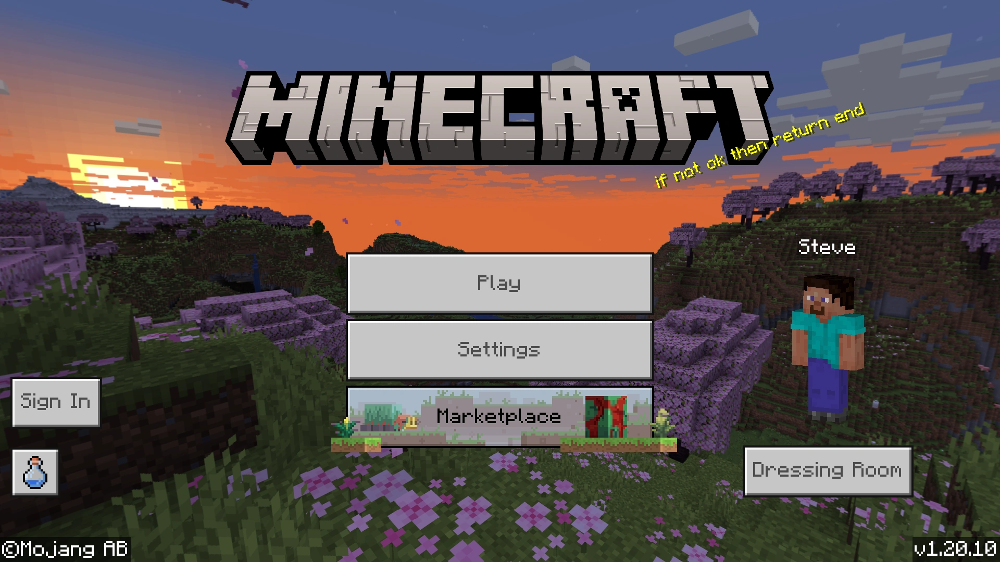
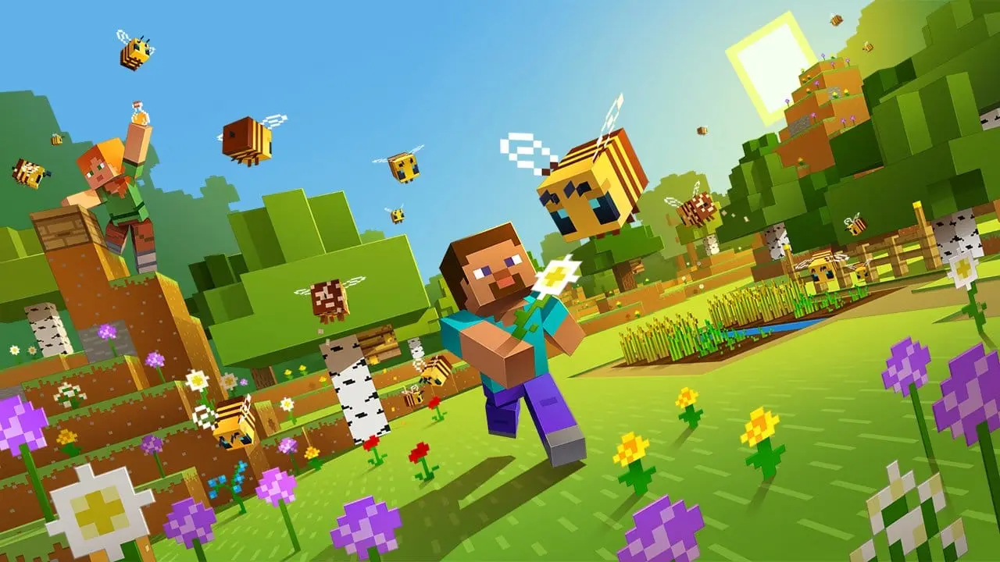

SUMMARY

Start on an extraordinary trip where your
imagination knows no bounds. Welcome to the
captivating world
of Minecraft!
Step into a world brimming with endless
possibilities, where lush landscapes stretch as far
as the eye
can see and mysterious caverns beckon you to explore
their depths. Craft, build, and create to your
heart's content, shaping your very own universe one
block at a time.
In Minecraft, the only limit
is
your imagination. So, if you're ready to delve into
a realm of boundless creativity and excitement, grab
your pickaxe and prepare to uncover the secrets of a
universe waiting for your unique touch. The
adventure of a lifetime awaits, let the blocks tell
your story in Minecraft!
WHAT'S IT?
In this huge cubic universe, you will find a
dimension called "The End", which marks an important
milestone in your journey. After facing and
defeating the dragon, you will be rewarded and the
game will
be over. However, the essence of Minecraft still
lies in the total freedom it gives players to define
their own path before and after "The End".
The core of Minecraft lies in block manipulation.
Every corner of this world is made up of
three-dimensional blocks. These blocks represent
natural elements such as earth, stone, minerals and
logs, among others. Your task is to explore, collect
and use these blocks to create and shape your
environment as you wish.
On your journey through Minecraft, you will find
amazing places, from villages to labyrinthine mining
galleries, mysterious sea temples, majestic
pyramids, exotic jungle temples, ruins and subway
dungeons.
Every corner is full of possibilities and adventures
waiting to be discovered.
CREATOR
Markus Persson, also known as
"Notch", is a Swedish video game developer and
programmer. He is best
known as the creator of the hugely popular video
game Minecraft. He founded
Mojang Studios, the company
responsible for the development of Minecraft, and
played a vital role in the game's early development.
Notch was born on June 1, 1979 in Stockholm, Sweden.
He has been passionate about programming since he
was 7 years old, and spent his adult life working
for video game companies such as King Digital
Entertainment and Jalbum. In
2009, he started developing Minecraft and
released an alpha version to the public in 2010.
THE PREDECESSOR
Infiniminer was
an online construction and exploration video game
released in 2009.
It was developed by Zachtronics Industries and is
considered one of the precursors and sources of
inspiration for the
popular game Minecraft.
In Infiniminer, players worked
together in a three-dimensional world, collecting
resources and
building structures using blocks. The game focused
on mining and collecting resources such as minerals
and materials to create objects and buildings.
Players could choose between different roles, such
as
miners, builders or explorers, to contribute to the
development and expansion of the world.
The game was based on friendly competition between
teams to complete specific objectives, such as
collecting the most resources or building impressive
structures. As players excavated and built, they
also had to watch out for the possibility of
landslides and collapses in the terrain.

HISTORY

| Notch lanza Minecraft.

| Minecraft llega a XBOX, PS3 y Android.

| Minecraft es comprado por Microsoft.

| Microsoft lanza Minecraft Bedrock.

| Minecraft ha superado las 350 millones de ventas. Es el juego mas vendido
MINECRAFT MODES
Single Player
Singleplayer is a game mode in which the player explores, builds and survives in the Minecraft world individually, without the presence of other human players online.
Multiplayer Player
Multiple players can interact and play together in the same Minecraft world at the same time. Instead of exploring and building alone, players can collaborate with each other.
SINGLE PLAYER MODES
-
SURVIVAL
In Survival Mode, players are immersed in challenging environments where they must gather necessary resources such as wood, stone, and food in order to survive. In addition to managing their health and hunger, they must also defend themselves from enemies such as monsters and hostile creatures that appear at night. Players can use the crafting system to create tools, weapons, and shelters to survive and thrive in this world.
-
CREATIVE
The creative mode is a paradise for builders and creators. Here, players have unlimited access to all resources and blocks in the game, allowing them to build without restrictions. They can fly freely around the world and do not have to worry about health, hunger or environmental hazards. This mode is ideal for building your crazy ideas.
-
SPECTATOR
Spectator mode is perfect for curious observers. Players in this mode can explore the world without restrictions and observe other players and creatures from any perspective. They can walk through blocks and get a full view of the world's details and creations without interfering with gameplay.
-
ADVENTURE
Adventure mode is designed for more guided and specific experiences. In this mode, players can explore custom worlds created by other players or the community. Unlike survival mode, here players cannot destroy blocks freely and can only interact with predetermined elements as designed by the map creator. This allows for the creation of challenging puzzles, quests and themed maps.
MINECRAFT CUSTOM
Start on an extraordinary trip where your
imagination knows no bounds. Welcome to the
captivating world
of Minecraft!
Not satisfied with what the game has to offer? Don't
worry, there is a large community of designers,
programmers, and enthusiasts who build new content,
texture packs, themed maps, and modifications (a.k.a
"Mods") every day.
Mods add various changes to the game, such as new
blocks, new objects, new actions, and even whole
sets
of mechanics that need to be created.
Additionally, the game has changed since being
acquired by Microsoft to allow for easier
customization
of the game, such as command blocks and data packs,
allowing for easier sharing of these customizations.